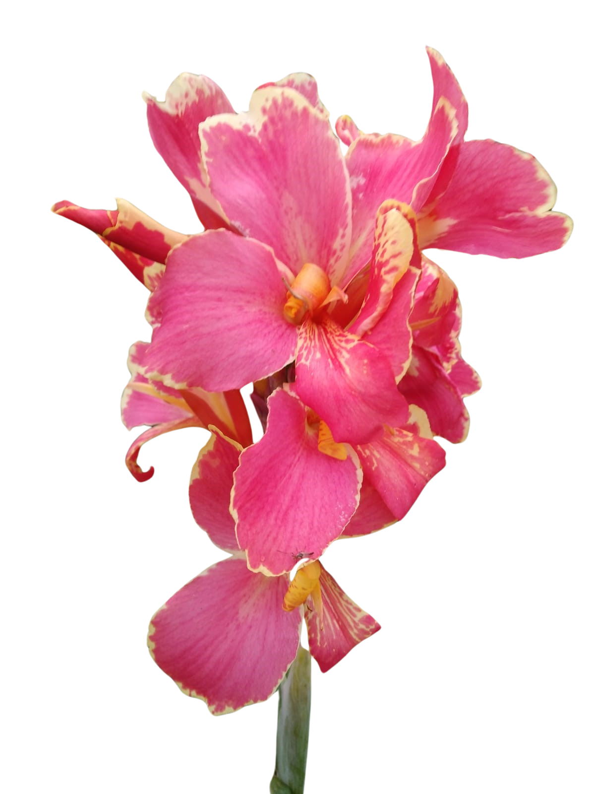

Canna Índica
A Canna índica é conhecida por suas flores vistosas e folhagem exuberante, o que a torna popular em jardins ornamentais. Aqui no Sítio Bento Francisco colecionamos mais de 70 variações de cores, pétalas, folhas e tamanhos desta espécie. Realize sua compra pelo Mercado Livre e garanta segurança e praticidade no envio.
Aproveite e siga nosso Instagram!
@sitiobentofrancisco
